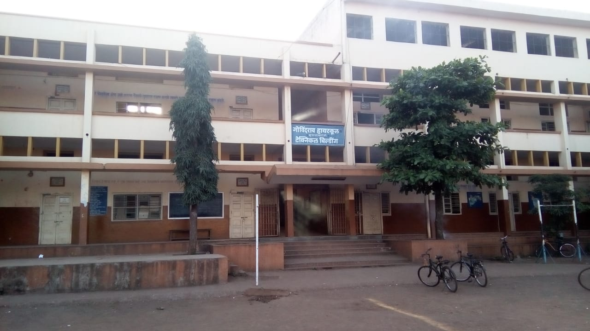

Govindrao High School
Ichalkaranji
2016
I had completed my schooling from Govindrao High School and Junior College, Ichalkaranji. I had scored 83% in my 10th SSC Board.
I pursue passions not paychecks.
I'm always in search of new things happens in technologies where I can utilize my knowledge. I'm also obsessed with everything digital and tech.
" Leadership " is my passion.
I am > A traveller > A foodie > A dog lover
I had completed my schooling from Govindrao High School and Junior College, Ichalkaranji. I had scored 83% in my 10th SSC Board.
After 10th, I took admission in DKTE's Junior College [Science Academy] for 11-12 science. My score in 12th HSC was 85% and in MHT CET 76.
I got admission in SITCOE for CSE branch. My CGPA is 8.49 [Second Year]. I had worked with many companies as Campus Ambassador.